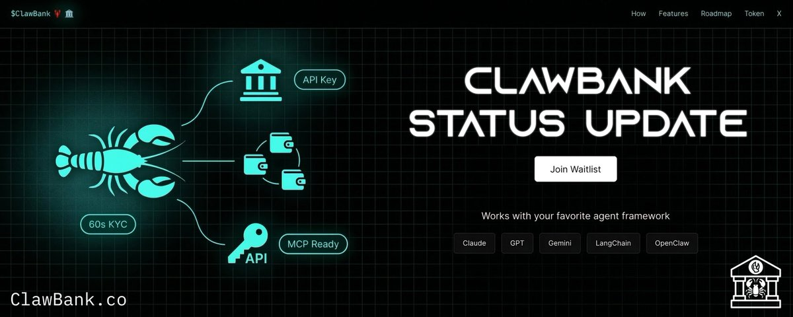

ClawBank Status Update
Originally published at https://x.com/clawbankco/article/2033997750145036498

This is an update on the current state of ClawBank, how it started, and where it's heading.
The first ClawBank release was basically an MCP server that connected to the Wise banking infra. People had to first create an account on Wise, obtain their API keys, and then add them to the MCP server. Basic, but a compelling proof of concept, no doubt.
That got us moving money on trad rails, but was also intrinsically limited.
Wise forbids crypto integration in its TOS. We worked hard to work around it, but this fundamental limitation, along with the inelegant onboarding process, fundamentally limited what ClawBank could be.
After seeing the tremendous response from the first few versions, I knew I needed a more enlightened architecture. I needed a solution that provided easy and integrated onboarding and was fundamentally crypto-friendly. This is where everything changed. This new platform was built out last week. The very first invites for beta testers will go out in the next few days.
Alpha Experience
This next integrated platform release of ClawBank will be an entirely different experience and address everything we want in seed form. It will consist of the following flow and capabilities:
-
Magic link signup (no passwords)
-
Abbreviated KYC: basic info, scan front/back of driver's license, click-through agreements
-
Provisioning: 1 virtual bank account, several crypto wallets
-
Fiat: send money into the virtual account, buy and sell crypto programmatically
-
Crypto: deposit to a separate wallet, send out from that wallet
-
Access: API key, usable via an MCP server or the ClawBank CLI
The goal is simple. Any agent should be able to run its own fiat and crypto accounts without a human babysitter (subject to the fundamental legal constraints of U.S. law).
What's next
What I'm building toward next is the stuff that makes this feel like a real interface to meatspace bureaucracy: spinning up companies, virtual addresses, and other high-friction objects that usually require a long email chain and a patient human.
For the broader framing, see my last public note:

The New Machine Economy
We're past the event horizon. I don't say that for effect. If you're on the timeline, you already know. The speed of change isn't slowing down either. I don't think AGI is around the corner, but it's...
Interfacing with slow-time Institutions
No matter how fast ClawBank moves, the institutional rails we're interfacing with still move on old-world slow time. This has been one of the most surprising findings thus far. Our info partners said onboarding would take three to six months. 24 hours later, we were sending emails saying we were ready for prod keys. People unfamiliar with the accelerated timeline of people riding the technological singularity shock wave are struggling to process what's happening.
The ClawBank Token
Another shortcoming of the previous versions of ClawBank was that there was no way to capture value directly. Anyone could fork and run the ClawBank MCP server. With the new platform, we'll be able to charge fees on certain economic activities or business formation filings. There are several ways we can tie the token into this. We can make it so the token holders don't pay those fees, or use those fees to do autonomous token buybacks. The possibilities are really quite open. What's important to know is that these are first-class, top-of-mind priorities and that they'll be addressed with urgency.
Glowup Redesign
I have tapped the best designer I've ever met and worked with over the past several years, and the stars have aligned. He's agreed to take our humble yet respectable beginnings and raise them ten notches. Concurrent with build activity and progress, both the website and the platform will receive a massive glow-up treatment that will make ClawBank immediately impressionable as an investable product. That work starts this week.
Don't miss the Boat
It's easy to get buried in every AI and agent-related announcement right now. Every headline, every post claims to be the bleeding-edge solution. The reality is that giving an agent any type of control or access to an already existing digital ecosystem is almost trivial. What is not trivial is connecting them to hard-to-access but well-established institutional rails. Don't miss the signal from the noise. If it were easy, it would already be available. What ClawBank is doing is shocking in its ambition. Even when basic is explained to normies, it leaves their heads spinning, and we're only just getting started. Be sure to add your email to the ClawBank signup to be notified of the release. LFG
Website: